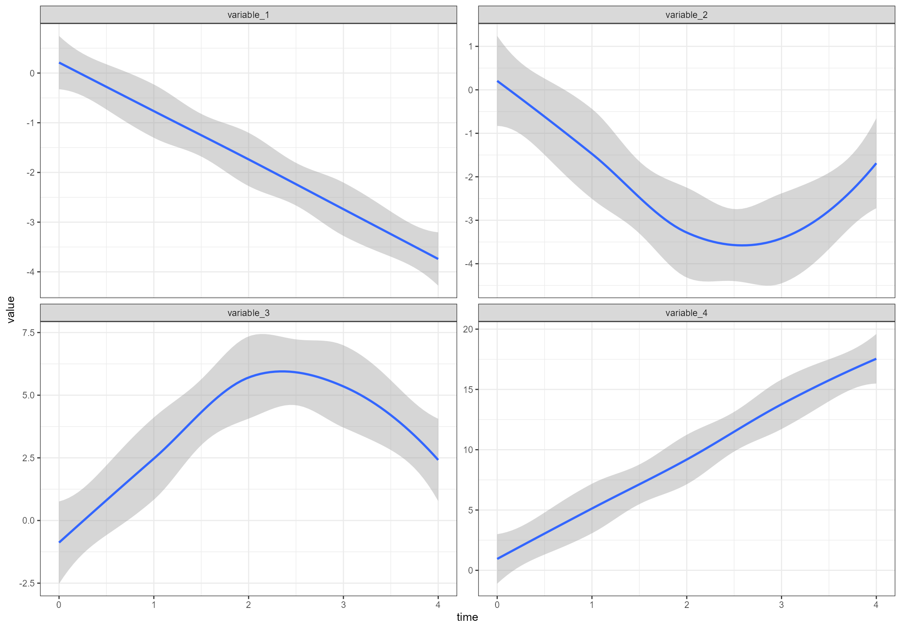
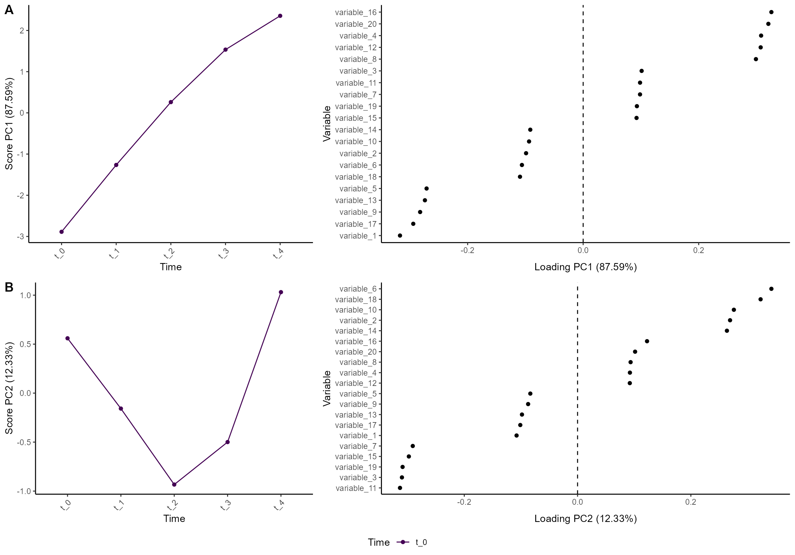

The ALASCA package is described in the paper ALASCA: An R package for longitudinal and cross-sectional analysis of multivariate data by ASCA-based methods.. The paper contains several examples of how the package can be used.
This vignette will only show how to quickly get started with the ALASCA package. For more examples, see
if (!requireNamespace("devtools", quietly = TRUE))
install.packages("devtools")
devtools::install_github(“andjar/ALASCA”, ref = “main”)If you have utilized the ALASCA package, please consider citing:
Jarmund AH, Madssen TS and Giskeødegård GF (2022) ALASCA: An R package for longitudinal and cross-sectional analysis of multivariate data by ASCA-based methods. Front. Mol. Biosci. 9:962431. doi: 10.3389/fmolb.2022.962431
@ARTICLE{10.3389/fmolb.2022.962431,
AUTHOR={Jarmund, Anders Hagen and Madssen, Torfinn Støve and Giskeødegård, Guro F.},
TITLE={ALASCA: An R package for longitudinal and cross-sectional analysis of multivariate data by ASCA-based methods},
JOURNAL={Frontiers in Molecular Biosciences},
VOLUME={9},
YEAR={2022},
URL={https://www.frontiersin.org/articles/10.3389/fmolb.2022.962431},
DOI={10.3389/fmolb.2022.962431},
ISSN={2296-889X}
}We will start by creating an artificial data set with 100 participants, 5 time points, and 20 variables. The variables follow four patterns
n_time <- 5
n_id <- 100
n_variable <- 20
df <- rbindlist(lapply(seq(1,n_id), function(i_id) {
rbindlist(lapply(seq(1,n_variable), function(i_variable) {
r_intercept <- rnorm(1, sd = 5)
beta <- 2 + rnorm(1)
temp_data <- data.table(
id = paste0("id_", i_id),
time = seq(1, n_time) - 1,
variable = paste0("variable_", i_variable)
)
if ((i_variable %% 4) == 0) {
temp_data[, value := r_intercept + beta * time]
} else if ((i_variable %% 4) == 1) {
temp_data[, value := r_intercept - beta * time]
} else if ((i_variable %% 4) == 2) {
temp_data[, value := r_intercept - beta*n_time/2 + beta * abs(time - n_time/2)]
} else {
temp_data[, value := r_intercept + beta*n_time/2 - beta * abs(time - n_time/2)]
}
temp_data[, value := value + rnorm(n_time)]
temp_data[, value := value * i_variable/2]
temp_data
}))
}))Overall (ignoring the random effects), the four patterns look like this:
ggplot(df[variable %in% c("variable_1", "variable_2", "variable_3", "variable_4"),],
aes(time, value)) +
geom_smooth() +
facet_wrap(~variable, scales = "free_y")
#> `geom_smooth()` using method = 'loess' and formula = 'y ~ x'
We want time to be a categorical variable:
df[, time := paste0("t_", time)]Your data can either be provided in long or wide format. In long format, there is one column with variable names and one column with the variable values. For example:
head(df)
#> id time variable value
#> 1: id_1 t_0 variable_1 1.3828485
#> 2: id_1 t_1 variable_1 -0.1201201
#> 3: id_1 t_2 variable_1 -1.9517166
#> 4: id_1 t_3 variable_1 -2.6064875
#> 5: id_1 t_4 variable_1 -3.7038462
#> 6: id_1 t_0 variable_2 -3.7026631In wide format, each variable has a separate column:
head(dcast(data = df, ... ~ variable))
#> id time variable_1 variable_10 variable_11 variable_12 variable_13
#> 1: id_1 t_0 1.3828485 -6.228376 -15.265175 37.096028 -38.06494
#> 2: id_1 t_1 -0.1201201 -26.588474 6.044736 69.501164 -60.78676
#> 3: id_1 t_2 -1.9517166 -44.381441 19.647231 90.658443 -69.23089
#> 4: id_1 t_3 -2.6064875 -30.279954 20.706314 123.272526 -87.70685
#> 5: id_1 t_4 -3.7038462 -24.107493 10.612104 154.207681 -99.25033
#> 6: id_10 t_0 5.8397677 -2.485652 1.539469 -2.489778 -17.62265
#> variable_14 variable_15 variable_16 variable_17 variable_18 variable_19
#> 1: 54.23920 1.315715 -10.57533 0.3414308 11.31133 1.142439
#> 2: 52.46458 29.328098 21.82058 -12.5444773 -32.91480 22.564073
#> 3: 35.62920 49.129389 20.12162 -28.8686196 -42.65936 47.322981
#> 4: 43.84871 49.257333 42.05962 -54.7630871 -16.13788 40.718641
#> 5: 45.02664 27.979451 35.83606 -86.3978895 -19.98617 36.743038
#> 6: -22.63858 -35.019133 15.08800 -19.7010536 25.51573 -21.008835
#> variable_2 variable_20 variable_3 variable_4 variable_5 variable_6
#> 1: -3.702663 48.08820 -7.393191 8.467175 -9.164179 -10.84332
#> 2: -1.645860 70.73733 -4.448549 12.497811 -18.577833 -17.67454
#> 3: -1.839278 121.27117 -1.234828 12.021641 -25.275798 -13.08360
#> 4: -2.512751 133.98493 -1.986770 16.288698 -36.566066 -12.00940
#> 5: -1.872892 161.08040 -3.318645 16.644950 -42.413655 -17.70020
#> 6: -5.492693 -94.80807 -1.196333 -14.673716 19.880784 27.20675
#> variable_7 variable_8 variable_9
#> 1: 9.263786 7.8786732 -45.98909
#> 2: 6.007909 11.5854577 -50.39939
#> 3: 9.915654 17.6115236 -46.19500
#> 4: 10.165576 13.1239293 -56.45868
#> 5: 6.096899 14.3080955 -57.90246
#> 6: -11.054364 -0.2876509 14.96302ALASCA supports both formats but defaults to long format. To use wide
format, you have to set wide = TRUE.
In this example, we are only looking at the common time development. For examples involving group differences, see the vignette on regression models.
To assess the time development in this data set, we will use the
regression formula value ~ time + (1|id). Here,
value is the measured variable value, time the
predictor, and (1|id) a random intercept per
participant-id. ALASCA will implicitly run the regression for each
variable separately.
res <- ALASCA(
df,
value ~ time + (1|id)
)
#> INFO [2023-06-19 22:06:10] Initializing ALASCA (v1.0.11, 2023-06-19)
#> WARN [2023-06-19 22:06:10] Guessing effects: `time`
#> INFO [2023-06-19 22:06:10] Will use linear mixed models!
#> INFO [2023-06-19 22:06:10] Will use Rfast!
#> WARN [2023-06-19 22:06:10] The `time` column is used for stratification
#> WARN [2023-06-19 22:06:10] Converting `character` columns to factors
#> INFO [2023-06-19 22:06:10] Scaling data with sdall ...
#> INFO [2023-06-19 22:06:10] Calculating LMM coefficients
#> INFO [2023-06-19 22:06:10] ==== ALASCA has finished ====
#> INFO [2023-06-19 22:06:10] To visualize the model, try `plot(<object>, effect = 1, component = 1, type = 'effect')`The ALASCA function will provide output with important information:
Guessing effects: 'time' When effects are not
explicitly provided to ALASCA, the package will try to guess the effects
you are interested in. See the
vignette on regression models for details.Will use linear mixed models! ALASCA will use linear
mixed models when you provide a random effect in the regression formula
(i.e., (1|id))Will use Rfast! Linear mixed model regression can be
performed by one out of two different R packages: the lme4
package or the Rfast
package
The 'time' column is used for stratification This is
only important for model validation. For details, see the vignette on model
validation
Converting 'character' columns to factors We provided
time as a character variable and ALASCA converts it to a factor
variable. If the levels of your variable matters and they are not in
alphabetical order, you may want to convert the variable to a factor by
yourself.Scaling data with sdall ... ALASCA supports various
scalings, and sdall is the default. For details, see our
paper ALASCA:
An R package for longitudinal and cross-sectional analysis of
multivariate data by ASCA-based methods.
Calculating LMM coefficients Simply informs you that
the regression is ongoing as this may take some timeTo see the resulting model:
plot(res, component = c(1,2), type = 'effect')
#> INFO [2023-06-19 22:06:11] Effect plot. Selected effect (nr 1): `time`. Component: 1 and 2.
#> WARN [2023-06-19 22:06:11] Showing 20 of 20 variables. Adjust the number with `n_limit`
#> WARN [2023-06-19 22:06:12] Showing 20 of 20 variables. Adjust the number with `n_limit`
See the vignette on plotting the model for more visualizations.